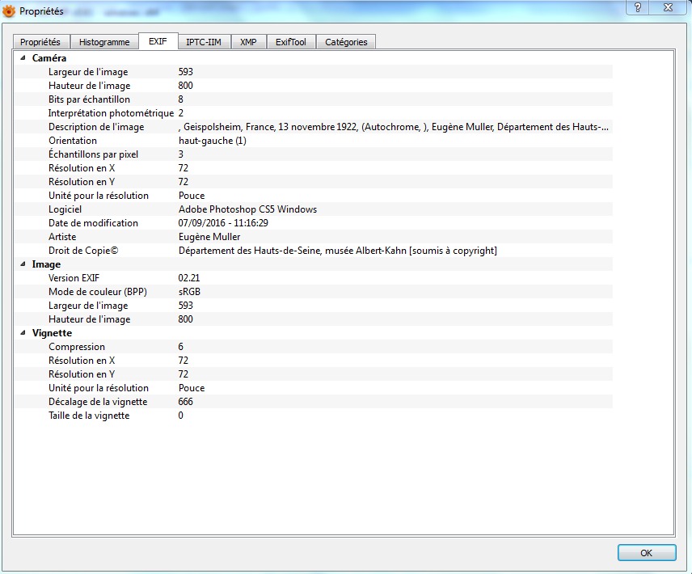

Lors d'une prise de photo avec un appareil photo numérique,toute une série d'informations en arrière-plan ainsi que des données de l'image sont enregistrées et sont appellés des métadonnées. Elles peuvent inclure des informations sur l'appareil photo, l'objectif et les réglages de prise de vue utilisés mais aussi des informations facultatives concernant (le photographe,l'emplacement,la date,l'heure...).On retrouve aussi des informations sur l'image elle-meme(la définition,la résolution...). L'enregistrement des métadonnées des photos numériques s'effectue sous forme de données EXIF et offre de nombreux avantages pratiques.Mis à part la création de l'enregistrement complet d'une image, elles permettent facilement la recherche de fichiers dans votre bibliothèque de photos, ce qui simplifie votre flux de travail mais aussi vous pouvez facilement filtrer les photos stockées sur votre appareil de stockage en fonction des caractéristiques de l’image. Il est utile pour les photographes d’apprendre à lire et interpréter le format EXIF pour simplifier le catalogage des images. Pour en savoir plus sur une photo vue sur un site web, vous pouvez vous référer aux données EXIF, à condition que le site utilise le fichier d’origine de la photo.La plupart des personnes préfèrent supprimer le fichier EXIF avant de charger leurs images sur un site web afin de protéger leurs informations personnelles,également les données de géolocalisation.
Les données EXIF peuvent être visualisées grâce à la plupart des logiciels de visualisation et de traitement des images.Mais le principe c’est qu’il s’agisse de formats JPEG et TIFF. Les formats RAW (qui veut dire une image brute) ne prennent pas en charge le standard EXIF. Il existe différentes méthodes pour lire les métadonnées. Il s’agit notamment d’outils gratuits spécifiques pour les métadonnées, de navigateurs Internet classiques ou de programmes de photos préinstallés.

Les métadonnées d’une image (comme la date, l'emplacement, le nom de l'auteur ainsi que d'autres informations provenant de l’appareil photo)sont modifiées à l’aide d’un logiciel adapté.Par exemple,avec un programme comme Adobe Photoshop ou GIMP,il suffit d'abord d’ouvrir l’image ensuite il faut y aller dans les propriétés ou les informations du fichier puis de changer les champs souhaités (titre, description, auteur, etc.) avant d’enregistrer le fichier.En Python,on peut aussi utiliser des bibliothèques spécialisées pour lire et modifier les métadonnées automatiquement. La modification des métadonnées permet d’organiser ses fichiers,d’ajouter des informations importantes ou de corriger des erreurs mais il faut le faire avec précaution car ces données peuvent servir de preuve d’authenticité ou d’information sur l’origine de l’image.
La perte des métadonnées est un problème qui peut survenir une fois que l’image JPEG a été réctifiée et enregistrée grâce à un logiciel de traitement des images. Dans ce cas, les données EXIF ne peuvent pas être conservées et doivent être supprimées par la compression automatique des données. Cela peut se révéler problématique notamment dans le cas où les photos doivent être classées par date mais aussi le modèle d’appareil photo ou les paramètres précis de prise de vue.